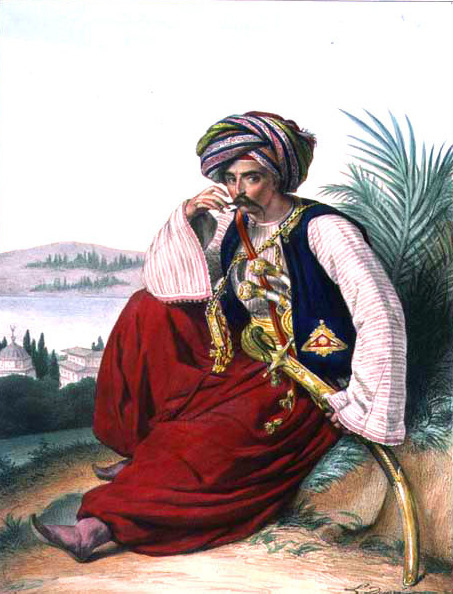
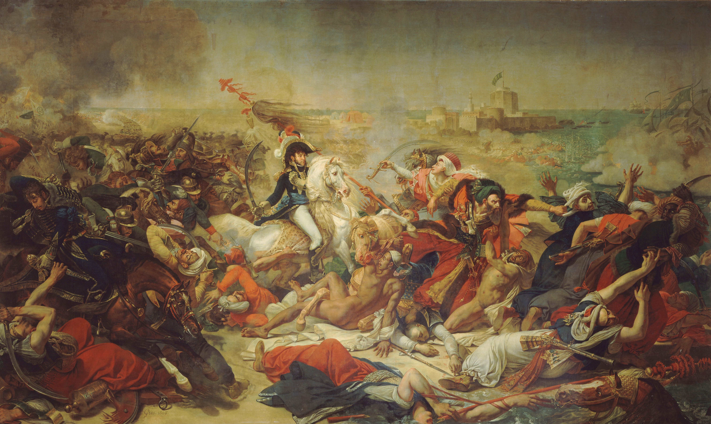
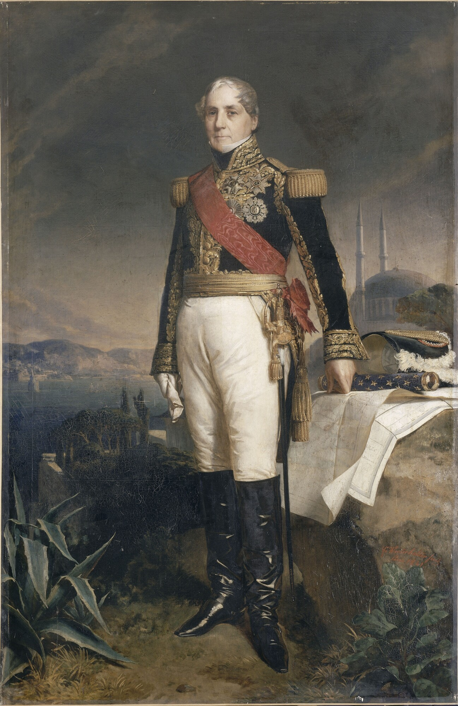
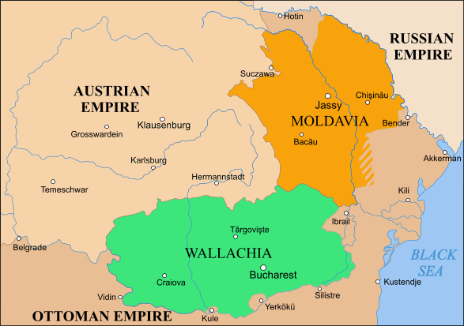
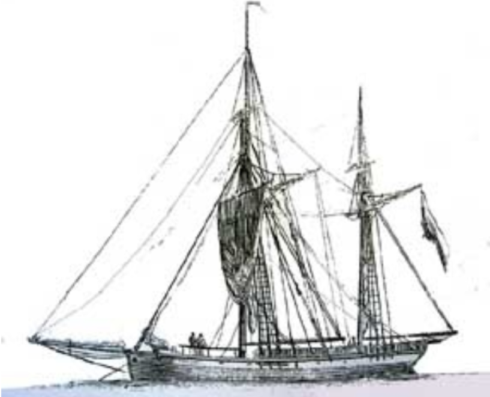
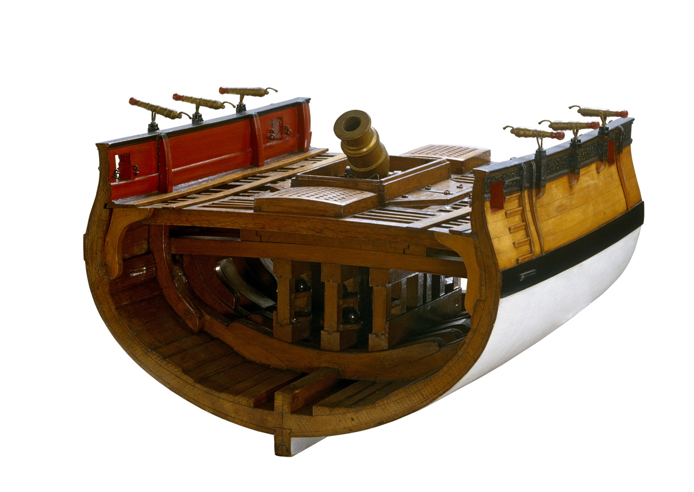

이스탄불 여행 (7) - 영국 함대가 보스포러스로 간 이유
게시: 2025-12-25T06:30:10+09:00
18세기 말 ~ 19세기 초, 유럽은 프랑스 대혁명과 나폴레옹이라는 불세출의 인물로 인해 대혼란의 시기를 거치고 있었습니다. 대륙 전체가 그런 상황인데 그 끄트머리에 있던 이스탄불도 평온할 수는 없었지요. 특히 1798년 나폴레옹이 정말 엉뚱하게도 이집트를 침공하자 오스만 투르크는 그 직격탄을 얻어맞게 됩니다. 당시 이집트는 오스만 투르크의 영토였지만, 자치령 정도의 위치를 가지고 있었고 그 지배자인 마믈룩(Mameluke) 용병들은 사실상 이스탄불로부터 독립적인 상태였습니다. 그렇게 비록 명목상일 뿐이지만 그래도 자신의 영토인 이집트를 제멋대로 침공한 나폴레옹과 오스만 투르크의 사이는 좋을 수가 없었습니다.

(이집트의 마믈룩은 오스만 투르크의 예니체리와 거의 동일한, 기독교 노예 소년들을 훈련시켜 무슬림 용병으로 키워낸 전사들이었습니다. 따라서 이들은 이집트인이 아니었고, 인종적으로는 백인에 가까웠습니다. 나폴레옹 시기에는 이들이 사실상 이집트의 주인 노릇을 하고 있었습니다.)
그 결과로 빚어진 것이 바로 1799년 7월의 아부키르(Aboukir) 전투였습니다. 나폴레옹이 시리아의 생장다크레(St. Jean d'Acre, 현지어로 Jaffa) 공방전에서 패배하고 풀이 죽은 채로 카이로로 돌아왔다는 소식을 들은 오스만 투르크는 이때다 하며 전열함 5척, 프리깃함 3척에 수송선 50여척으로 꾸린 함대에 1만5천 병력을 태워 이집트 해안 아부키르로 파견한 것입니다. 그러나 그 결과는 오스만 투르크로 나폴레옹 치기에 불과했습니다. 오스만 투르크군 1만5천 중 대부분은 전사하거나 포로가 되거나 아군 함대를 향해 바다에 뛰어들었다가 빠져죽었고, 극소수만이 헤엄을 쳐서 배에 올라 목숨을 건질 수 있었습니다. 그 중 하나가 알바니아 출신이었던 30세의 젊은 장교 모하메드 알리(Mohammed Ali)였고, 이 남자의 이야기는 보스포러스 해협 이야기에서 나중에 또 나오게 됩니다.

(뮈라에 의한, 뮈라를 위한, 뮈라의 전투였던 아부키르 전투 그림입니다. 이 그림에서 주목할 부분은 오른쪽 위의 바다 위에 둥둥 떠있는 하얀 것들입니다. 그건 살 길을 찾아 바다로 뛰어들었다 익사한 오스만 투르크군의 터번입니다. 아부키르 전투에 대해서는 https://nasica-old.tistory.com/6862497 를 참조하십시요.) 이렇게 험악하게 시작된 나폴레옹과 오스만 투르크의 관계는 러시아가 계속 오스만 투르크의 영토를 침범하면서 다시 호전됩니다. 적의 적은 나의 친구라는 간단한 논리로, 오스만 투르크는 러시아의 적인 나폴레옹에 대해 손을 내밀었고, 나폴레옹은 세바스티아니(Sebastiani)를 이스탄불에 파견하여 술탄 셀림 3세가 추진하던 부국 강병을 위한 개혁을 도와 니잠므 제디드(Nizam-ı Cedid)라는 유럽식 신식 군대 양성에도 기여하는 등 오스만 투르크와 동맹 관계가 되었습니다. 하지만 적의 적이 내 친구라면, 적의 친구는 나의 적이 되기도 하는 법입니다. 오스만 투르크가 나폴레옹의 친구가 된다는 것은 영국과는 적이 된다는 것을 뜻했습니다. 영국은 여태까지 오스만 투르크와 물리적으로 충돌할 일이 거의 없었고, 오히려 나폴레옹이 이집트를 침공했을 때 오스만 투르크를 적극적으로 도와주었던 동맹이었습니다. 그러나 나폴레옹의 친구가 된 대가로, 오스만 투르크는 이제 영국과 정면 충돌하게 됩니다.

(세바스티아니입니다. 군인으로서는 사실 뛰어난 전공을 보여주지 못했지만, 2가지로 유명한 인물입니다. 하나는 여기서 소개된 오스만 투르크에 대한 외교 치적이고, 나머지 하나는 스페인 그라나다에 주둔하다가 거의 폐허로 버려졌던 알함브라 궁전의 가치를 알아보고 재건하여 자신의 사령부로 썼다는 점입니다. 그가 아니었으면 오늘날의 알함브라는 없었을 수도 있었습니다. 이 그림은 그의 노년기인 1841년 경에 그려진 것인데, 배경으로 이스탄불의 하기야 소피아가 그려져 있습니다.) 일단 나폴레옹이나 영국이나 자국과는 멀리 떨어져 있는 오스만 투르크에게 바라는 것은 딱 하나, 러시아와의 관계였습니다. 나폴레옹은 러시아가 자신과의 싸움에 전력을 다하지 못하도록 오스만 투르크가 러시아의 남부 국경에서 계속 싸워 주길 원했고, 영국은 반대로 러시아가 프랑스와의 전쟁에 전념할 수 있도록 오스만 투르크가 러시아에게 굴복하기를 원했습니다. 1806년은 상당히 복잡한 연쇄반응이 일어난 해였습니다. 바로 전 해인 1805년 12월, 나폴레옹이 아우스테를리츠에서 러시아-오스트리아 연합군을 박살내자, 오스만 투르크는 숙적 러시아를 무찔러 줄 진짜 실력자로 나폴레옹을 인정하게 되었습니다. 특히 아우스테를리츠의 전리품으로 달마티아 지방, 즉 오늘날의 크로아티아 일대를 나폴레옹이 손에 넣고 거기에 프랑스군이 주둔하게 되자, 오스만 투르크는 발칸 지역에 대해 자신감을 가질 수 있었습니다. 그 결과로, 오스만 투르크는 사실상 자치령처럼 행동하던 왈라키아(루마니아)와 몰다비아(루마이나 및 몰도바)의 친러시아 방백들을 쫓아내 버렸습니다. 그들에 대해 든든한 슬라브 형님으로 자처하던 러시아로서는 팔짱 끼고 있을 수 없었습니다. 러시아는 즉각 4만의 병력을 왈라키아와 몰다비아로 진격시켰습니다. 당연히 오스만 투르크도 가만 있을 수 없었습니다. 오스만 투르크는 러시아에 대해 선전포고하고, 러시아가 가지고 있던 보스포러스 해협에 대한 자유 통행권을 취소시켜 버렸습니다. 이런 중요한 때에 프로이센은 나폴레옹에 대해 선전포고하고 러시아군의 개입을 요청했습니다. 러시아로서는 프로이센과 오스만 투르크, 2개 전선에서 동시에 전쟁을 수행해야 할 상황이 된 것입니다. 여기까지는 나폴레옹의 계획대로 흘러갔습니다.

(18세기말~19세기초의 왈라키아-몰다비아 공국들의 지도입니다.) 나폴레옹이 미처 예상하지 못했던 것은 영국의 개입이었습니다. 2개 전선에 군을 나눠 보내기가 힘에 벅차던 러시아는 영국에게 뭐라도 좀 해보라고 요구했고, 지상군에 대해서는 자신이 없던 영국은 이럴 때 조자룡 헌 창 쓰듯 믿고 쓰던 해군을 투입했습니다. 영국은 지중해 함대에서 함선들을 빼내어 이스탄불로 파견할 준비를 하면서, 루이스 경(Sir Thomas Louis)을 이스탄불로 먼저 보내어 다음과 같은 요구를 했습니다. - 세바스티아니를 추방하라 - 나폴레옹에 대해 선전포고하라 - 왈라키아와 몰다비아를 러시아에게 양도하라 - 오스만 투르크가 가진 해군 함선들과 다다넬즈 해협의 요새들을 영국에게 넘겨라 이런 무지막지한 요구는 요즘의 미국조차도 할 수 없는 수준의 것이었고 당시 영국은 대영제국이라고 불리기엔 아직 크게 부족한 상태였습니다. 당연히 오스만 투르크는 이런 요구를 받아들일 이유가 없었습니다. 그리고, 영국도 큰 소리를 쳐놓았지만 정작 오스만 투르크를 굴복시키기엔 당장 동부 지중해에서 동원할 해군력이 크게 부족했습니다.
(아마 영국의 요구 사항을 들은 오스만 투르크의 반응이 딱 이 정도였을 듯 합니다.)
1807년 2월, 이스탄불을 포격하여 오스만 투르크의 항복을 받아내라는 임무를 부여받은 덕워쓰(Sir John Duckworth) 제독에게 주어진 전력은 전열함 8척과 프리깃함 2척, 그리고 박격포함(bomb ketch) 2척뿐이었습니다.
 
(박격포함(bomb ketch)은 크기가 작은 배이지만 커다란 포물선을 그리는 대구경 박격포를 장착한 특수한 구조의 배입니다. 돛대가 2개 달린 소형 선박을 ketch라고 부르는데, 박격포를 앞에 장착해야 하는 특성상 그 2개 돛대를 약간 후방에 달 수 없어서, 항행성이 매우 좋지 않았습니다. 대신 대구경 박격포의 반동을 견뎌야 했으므로 매우 튼튼하게 만들어졌습니다.) ** 원래 이 사건은 한 편으로 쓰려고 했는데 분량 조절 실패로 다음 주로 넘어갑니다. 나폴레옹 전쟁 당시 전열함이 성벽으로 보호된 요새를 공격하는 양상에 대해서는 아래 Hornblower 시리즈 중 일부를 번역해놓은 아래 포스팅을 읽어보시면 이해에 도움이 되실 것입니다. https://nasica1.tistory.com/234
나폴레옹 시대 영국 전함의 전투 광경 - Lieutenant Hornblower 중에서 (1)
이제 나폴레옹의 러시아 침공 서전이 시작되어야 하는데, 제가 요즘 다사다난하여 책을 못 읽고 있습니다. 최소 몇 주 간은 C. S. Forester의 Lieutenant Hornblower 중에서 제가 무척 재미있게 읽었던 부
nasica1.tistory.com